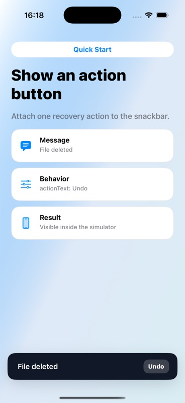

Quick Start
Show an action button
Attach one recovery action and dismiss after handling the tap.
Code
let snackbar = TTGSnackbar(
message: "File deleted",
duration: .middle,
actionText: "Undo"
) { snackbar in
restoreFile()
snackbar.dismiss()
}
snackbar.show()
